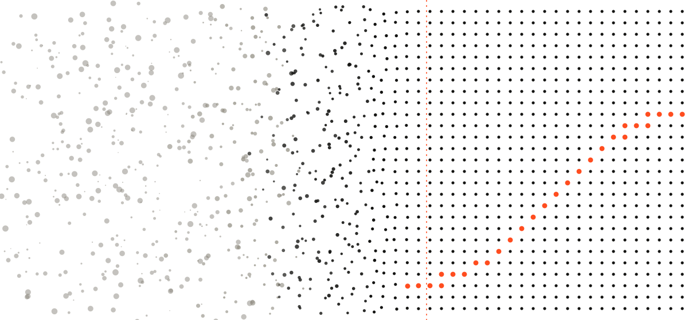

● The rule of justice · An open governance framework
Justice as a function, not a metaphor.
Dikenocracy is a governance framework built on measurable reality, deterministic rules and transparent protocols — designed to reduce dependence on opinion, narrative and unchecked authority.

The Dikenocracy manifesto
We don’t ask the old world for permission. We build a new world alongside it.

01 — How it works
Four ideas run through every protocol.
More about the idea →- 01
Measurable reality
Decisions start from verified physical data. The base layer defines how reality is captured and checked.
- 02
Deterministic rules
Rules are formal and testable, so accountability becomes a consequence rather than a political choice.
- 03
Transparent protocols
Every protocol is public, dated and auditable. Changes follow a defined upgrade procedure.
- 04
No unchecked authority
Power is held by the function of justice — open algorithms, public metrics and data — not by people, parties or elites.
02 — The protocol stack
Nine layers, from physical truth to infrastructure.
Each protocol defines a bounded part of the system and is designed to be testable and auditable. Layers build on each other.
- L8InfrastructureContinuous audit, external interoperability, simulation & validation engines.3→
- L7Meta / ScopeApplicability boundaries, privacy hard limits, transparency, AI subjects.4→
- L6IntersystemEntry and exit for jurisdictions interfacing with the system.3→
- L5Human InfrastructureCulture, education, habitat, information, transport, work cycle.6→
- L4StabilityCrisis handling, error correction, controlled upgrades.4→
- L3SecurityDefense, counter-terrorism, internal security, physical enforcement.4→
- L2EconomicDual-circuit economy, value chains, conditional emission.3→
- L1CoreAxioms, identity, impact measurement, justice invariants.6→
- L0Physical TruthHow observable reality is captured, verified and passed up.2→
- ∴Code of Planetary SynergyThe foundation every protocol builds on.1→
↓ No higher-layer protocol may violate a lower-layer constraint.
03 — Working projects
Concrete tools that put the protocols into software you can use today.
All projects →
Business tool
Mazkira
An assistant for small businesses in Israel: documents, bookkeeping support, taxes and cash flow — in Hebrew, Russian and English.
Open Mazkira
Tool · L0
DTI Time Converter
Convert any date between the Gregorian, Hebrew and Dikenocratic (DTI) calendars, right in your browser.
Convert a date
Privacy tool
Shadoo
Encrypt a message locally with a code phrase you agreed in person. Nothing readable is sent to the server.
Open ShadooWhere to start
Start with the foundation.
The Code of Planetary Synergy explains the system in one document; every protocol builds on it.
Read the Code →